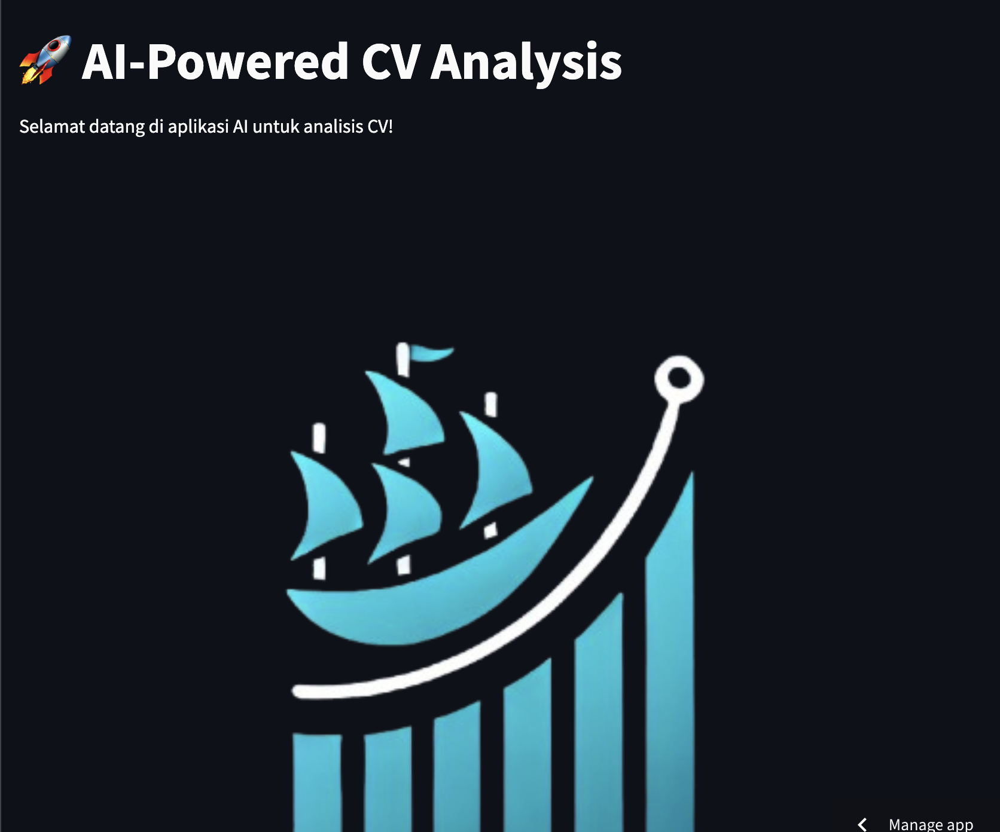

Data & Analytics
Working with data, extracting insights, and presenting results.
SOFTWARE ENGINEER / INDONESIA
Software Engineer Software Engineer
I build practical software with a focus on clear architecture, reliable APIs, and useful product experiences.
I’m a software engineer interested in building dependable applications and backend services. My work spans API development, data-intensive applications, automation, and AI-assisted products. I care about maintainable code, thoughtful system design, and shipping software that solves a real problem.
Hello, I’m Tatas Handharu Sworo. I enjoy working across backend development, web applications, data systems, and AI-enabled workflows—turning a problem into a maintainable, practical solution.
Currently focused on backend foundations, product-minded engineering, and learning through projects that connect software with real-world workflows.
A focused overview of the tools I use across data, application development, and machine learning.
Working with data, extracting insights, and presenting results.
Model development, experimentation, and AI-assisted workflows.
Core technical foundations for data tasks and software solutions.
A concise overview of my education, professional experience, and selected learning milestones.
Software engineer with a cross-disciplinary background in software, data, and AI-enabled applications.
University of Technology Yogyakarta, Sleman, DI Yogyakarta
Analysis and Prediction of Indonesia Stock Exchange (IDX) Stock Prices Using Long Short Term Memory (LSTM) Algorithm
Software Engineer
Data Access, Basic Transformations, Working with Multiple Data Sets, Pivot Tables, Routines and Simple Text Processing.
Classification, Regression, Scoring, Hold-out Validation, Correlations, Feature Importance, Clustering and Association Rules.
Python, Data Visualization and Machine Learning
Data Scientist · Full Time
Assistant lecturer - Part Time
Data Analyst - Project-Based Virtual Internship
Data Analyst - Project-Based Virtual Internship
A curated selection of software engineering, AI, data science, computer vision, and data engineering projects. Explore the live work or source repository behind each project.
A dual-stack lead-management application with Python/FastAPI and TypeScript/Fastify implementations.
Explore repository
02An AI-assisted experience for CV review and candidate analysis.
View live projectStock-price analysis and prediction using a Long Short-Term Memory (LSTM) approach.
Explore repositoryLoan prediction analysis developed during the IDX Partners project-based internship.
Explore repositoryA computer-vision project focused on detecting vehicle license plates.
Explore repositorySales-performance analysis using BigQuery, data marts, and Looker Studio.
Explore repositoryData cleaning, transformation, deduplication, and dataset integration with Pentaho Data Integration.
Explore repositoryAn interactive Looker Studio report for exploring YouTube analytics.
Open dashboardExploratory analysis of sales performance and business data.
Explore repositoryHave a role, collaboration, or project in mind? Send a message or reach out directly by email.
Indonesia
tatas.handharu@gmail.com